Voz
La palabra de activación es «oye Jerry». El nombre que se le pone en el primer paso es esa palabra, y se cambia en Ajustes. También se le puede escribir.
Jerry 4.1.2 · asistente de escritorio
Dices «oye Jerry» o escribes. Siete agentes trabajan en tu ordenador, con modelos locales y sin cuenta en la nube.
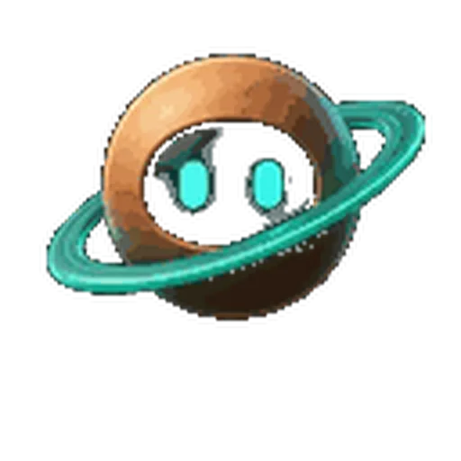
01 · Qué es
Jerry se abre en el ordenador. Coordina el navegador, las aplicaciones y los agentes de código, y hace el trabajo ahí.
La palabra de activación es «oye Jerry». El nombre que se le pone en el primer paso es esa palabra, y se cambia en Ajustes. También se le puede escribir.
Siete agentes. Cada uno tiene un trabajo y una cara. Saturn dirige, y es la cara con la que Jerry se presenta.
Los modelos son locales y privados. No hace falta una cuenta intermedia en la nube.
02 · El equipo
Saturn es la cara por defecto. La rejilla es la de Sopa: cinco gestos de cada cara. En cada ficha, el gesto de reposo, recortado de esa imagen.
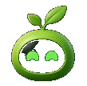
Chat
La conversación. Le escribes o le hablas, y Sprout es quien está delante.
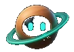
Director Por defecto
Coordina al equipo. Es la cara con la que Jerry abre.
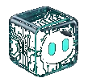
Código
El código en el ordenador, y el enlace con los agentes de programación.
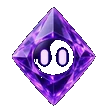
Documentos
Lee documentos y trabaja con ellos.
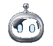
Archivos
Carpetas y archivos del ordenador.
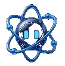
Investigación
Busca.
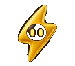
Automatizaciones
Las tareas que se repiten.
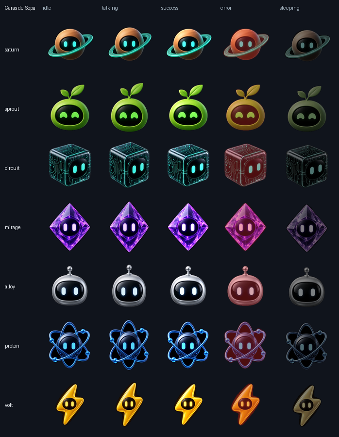
03 · Mascotas
Jerry trae las 21 caras de Sopa como mascotas. Se elige una en Ajustes › Mis mascotas y flota en el escritorio, encima de las demás ventanas. Las siete marcadas son las de los agentes; las demás se pueden usar igual.
Director
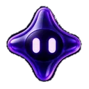
Libre
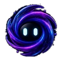
Libre
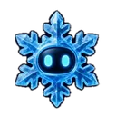
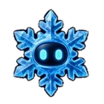
Libre
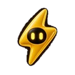
Automatizaciones
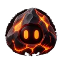
Libre
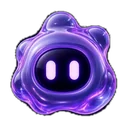
Libre
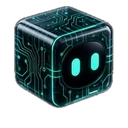
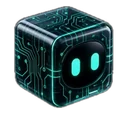
Código
Investigación
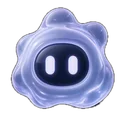
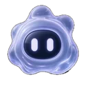
Libre
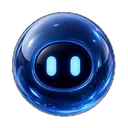
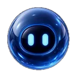
Libre
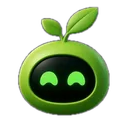
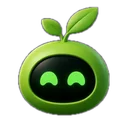
Chat
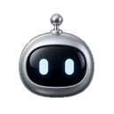
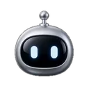
Archivos
Libre
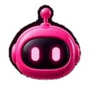
Libre
Libre
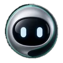
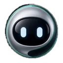
Libre
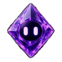
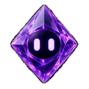
Documentos
Libre
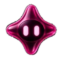
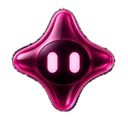
Libre
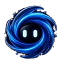
Libre
Cada mascota tiene diez animaciones, una por estado, y cambia sola según lo que esté haciendo Jerry. Aquí, Saturn.
Respira y parpadea mientras no pasa nada.
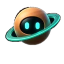
Al oír «oye Jerry», mientras hablas.
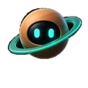
El modelo está preparando la respuesta.
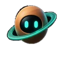
Mientras Jerry responde en voz alta.
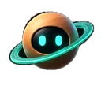
Una tarea ha terminado sin problemas.
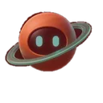
Algo ha fallado; dura un momento.
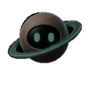
Tras un rato sin usarse.
Ejecuta comandos o mueve archivos.
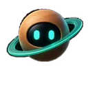
Busca en la web o en tus carpetas.
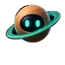
Mientras la arrastras por el escritorio.
Las animaciones salen de las hojas de sprites del programa (formato jarvis-pet/1: un pet.json y una sheet.png con una fila por estado), a 128 píxeles por fotograma.
04 · Capturas
Capturas de la interfaz real de Jerry 4.1.2, en español. Las conversaciones son de ejemplo, escritas para esta página; la ventana, los menús y las mascotas son los del programa. El selector muestra un modelo local, gpt-oss-20b.
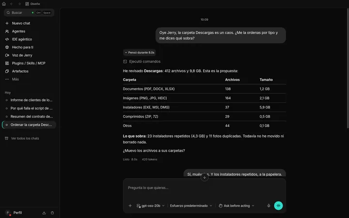
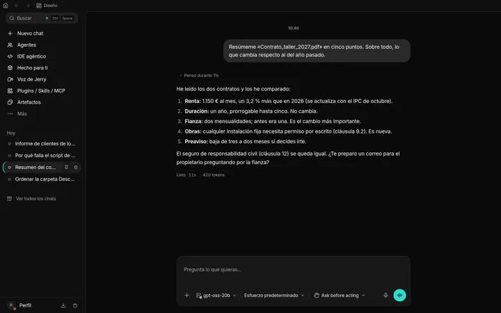
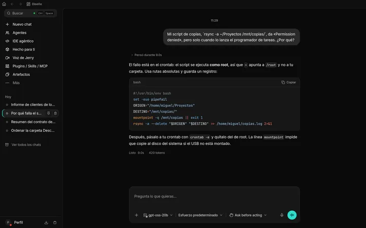
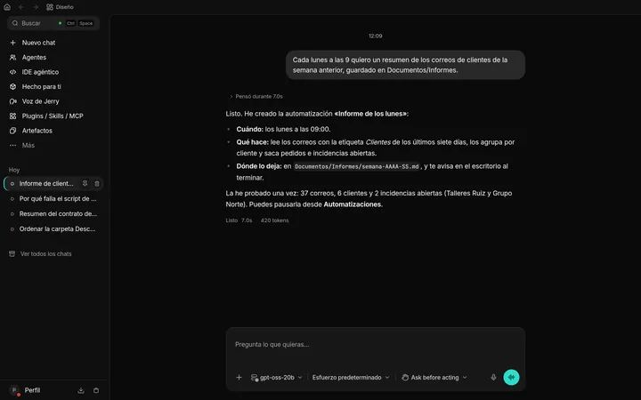
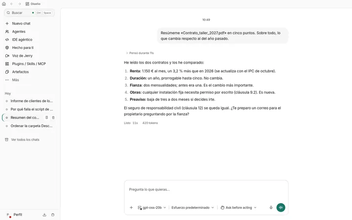
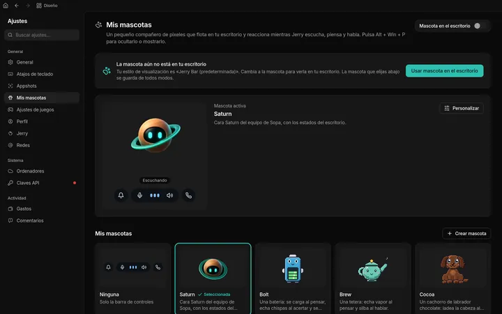
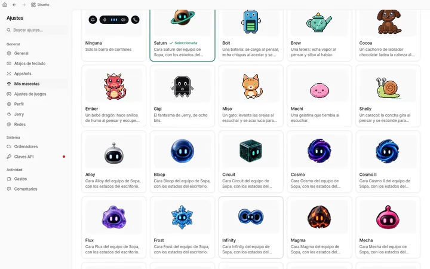
Pulsa una captura para verla grande; con las flechas pasas a la siguiente. La mascota flotando sobre el escritorio no sale aquí: esa ventana no se puede capturar desde un navegador.
05 · Cómo empezar
Esta página no reparte el instalador. El repositorio del producto es privado y las descargas viven en su release privada.
Hace falta acceso a github.com/ardu01/jerry. Ahí está la release con los instaladores, mientras siga siendo privada. La versión de esta página es la 4.1.2.
Al abrir, Jerry pregunta cómo quieres llamarle. Ese nombre es la palabra de activación. El ejemplo que trae es «Oye Jerry».
El asistente sigue con esos dos pasos. En la misma pantalla se elige el idioma: inglés, alemán, español, chino o portugués.
Dices «oye Jerry», o escribes. El equipo trabaja en el ordenador: navegador, aplicaciones y agentes de código.
06 · Licencias
Jerry, en conjunto, es solo la versión 3 de la GPL, no una posterior. Dentro caben dos piezas con su propia nota.
El programa se ofrece bajo la GNU GPL 3.0 únicamente. Esta web también: el texto y el código de la página, con copyright de Miguel Rodríguez Saiz.
Jerry deriva de Dodaios, publicado bajo la licencia Apache-2.0. El aviso se conserva en el repositorio del producto. Esta web no usa sus materiales de marca.
Saturn, Sprout, Circuit, Mirage, Alloy, Proton, Volt y las otras catorce son las caras de Sopa, con licencia GPL. Las 21 caras son mascotas de Jerry. La rejilla, los recortes y las animaciones de esta página salen de esos archivos.
El tipo Inter es de The Inter Project Authors y va bajo la SIL Open Font License 1.1. El texto está en fonts/OFL.txt.